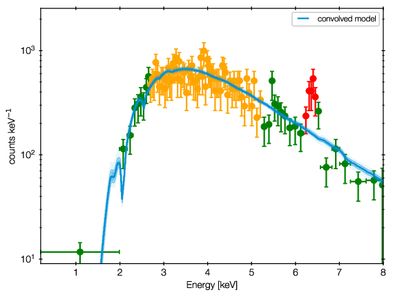
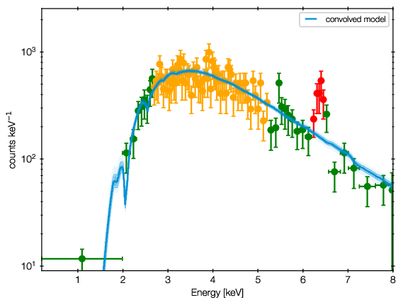

Model discovery¶
Is the model the right one? Is there more in the data? These questions can not be answered in a statistical way, but what we can do is
generate ideas on what models could fit better
test those models for significance with model selection
For the first point, Quantile-Quantile plots provide a unbinned, less noisy alternative to residual plots.
 

QQ plot example (left), with the corresponding spectrum for comparison (right).
In these plots, for each energy the number of counts observed with lower energy are plotted on one axis, while the predicted are on the other axis. If model and data agree perfectly, this would be a straight line. Deviances are indications of possible mis-fits.
This example is almost a perfect fit! You can see a offset growing at 6-7 keV, which remains at higher energies. This indicates that the data has more counts than the model there.
As the growth is in a S-shape, it is probably a Gaussian (see its cumulative density function).
Refer to the appendix of the accompaning paper for more examples.